✓ All packages loaded successfully!✓ Working directory: C:/Users/arzoo/OneDrive - PennO365/Documents/GitHub/PPA-Portfolio/Labs/Lab_4 This is an academic exercise conducted to understand the mechanics, and the limits, of spatial predictive modeling in a public safety context. Building a model that predicts crime risk is not the same as recommending that one be used, and this lab should be read in that spirit.
Chicago offers one of the most well-documented cautionary examples of what happens when predictive tools move from the classroom into deployment without sufficient scrutiny. It was a story about bad data, and the consent decree is where that becomes legally verifiable. The DOJ investigation that preceded the consent decree was triggered by the 2014 killing of Laquan McDonald. That investigation found that the Chicago Police Department routinely violated the constitutional rights of Black and Latinx residents, used excessive force, and operated with a culture of impunity, and that officers commonly stopped and searched Black youth without legal justification, driven by racial stereotypes rather than reasonable suspicion. The Chicago Reporter The Illinois Attorney General filed a lawsuit in August 2017 to force a consent decree, and it took effect in January 2019. Chicagopoliceconsentdecree
This is where a landmark 2019 report by the AI Now Institute becomes directly relevant. The researchers examined 13 jurisdictions that had used predictive policing systems and cross-referenced them with consent decrees and federal court-monitored settlements; using those legal findings as proof that unconstitutional policing practices had shaped the underlying data. Chicago was their first case study: a documented example of a jurisdiction where dirty data was ingested directly into the city’s predictive policing system. NYULawReview The concept they introduced, “dirty data,” refers to data derived from or influenced by corrupt, biased, and unlawful practices, including both discriminatory policing and manipulation of crime statistics. The consent decree provided the legally verified paper trail proving that this is exactly what happened in Chicago.
This matters for the analysis that follows. The burglary data used in this lab was generated by a police department that was simultaneously under federal scrutiny for unconstitutional practices. Any model trained on that data does not neutrally describe where crime occurs, it describes where a constitutionally non-compliant police department directed its attention and made its arrests.
After six years of federal oversight and more than $15 million spent on independent monitoring, CPD has fully implemented just 23 percent of the reforms it agreed to. The Chicago Reporter The data being generated today is still produced by an institution mid-reform at best. What follows is an exercise in understanding how spatial predictive models are constructed, offered precisely so we can think critically about why they should never be deployed uncritically, and why Chicago’s experience is not an anomaly but a warning.
When alley lights go out, they don’t just create inconvenience; they create voids of darkness in spaces that already lack foot traffic and natural surveillance. This analysis examines 311 reports of broken alley lights in Chicago during 2017 to ask a spatial question: can the geographic distribution of infrastructure neglect — specifically, unlit alleys — help predict where burglaries occur?
But before proceeding, it is worth naming what this kind of analysis does and does not do. Mapping broken alley lights and burglaries together does not reveal causation — it reveals correlation.
Using 311 data as a predictor of crime risk means using a signal that is itself shaped by who calls 311, how quickly complaints are resolved, and which neighborhoods receive timely responses. A model trained on this data doesn’t neutrally describe reality. That is the data problem at the heart of any predictive policing application, and it is why we build this model to understand.
The neighborhoods with the most broken light complaints are also the neighborhoods that could have:
✓ All packages loaded successfully!✓ Working directory: C:/Users/arzoo/OneDrive - PennO365/Documents/GitHub/PPA-Portfolio/Labs/Lab_4 The 311 violation data for broken alley lights have been loaded into the R environment. Along with this Police Beats, Districts, and the Chicago Boundary have been using API’s from the city of Chicago’s data portal. The data has been subsequently cleaned for further analysis. It has also been projected into the Chicago 1983 NAD state-plane to ensure spatial accuracy in future calculations.
✓ Cleaned Alley Lights Violation Data - Violations: 27890 - Date range: 2017/01/01 to 2017/12/31 ✓ Loaded spatial boundaries - Police districts: 25 - Police beats: 277 The dot map below reveals something more important than the total count: these complaints are not evenly distributed. Large swaths of the North Side and the lakefront appear relatively sparse, while the West Side and parts of the South Side are so densely covered in dots that individual points are nearly indistinguishable. This is not a map of broken lights, it is a map of where broken lights are reported, where residents engage with city services.
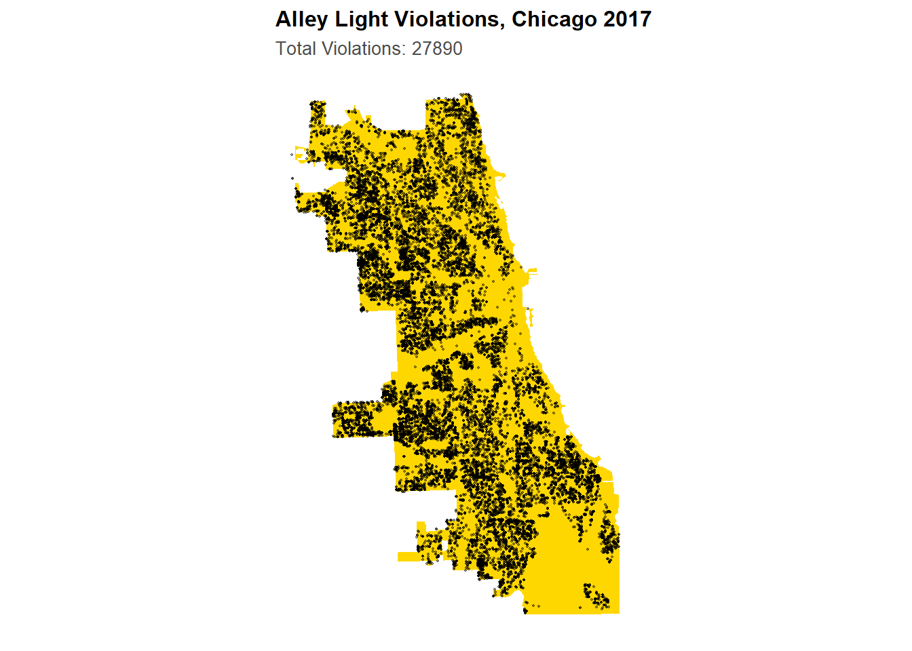
The monthly bar chart complicates this further. Rather than peaking in summer, complaints are actually highest in January, February, and March—the winter months—and notably lower through July and August. This is counterintuitive if we think of 311 calls as a direct response to dangerous darkness. It may instead reflect patterns of indoor activity in winter leading people to notice alley lights from windows, or seasonal city maintenance cycles. Whatever the cause, the seasonality is a reminder that 311 data is a record of human behavior around reporting, not a direct sensor reading of infrastructure failure.
The resolution time histogram drives this point home sharply. The distribution is heavily right-skewed: the vast majority of complaints are resolved within a few days, creating the tall spike at the left of the histogram, but a long tail extends far to the right—some complaints take months to close. This variance in response time is not random. It is spatially structured, as the district-level maps below reveal.
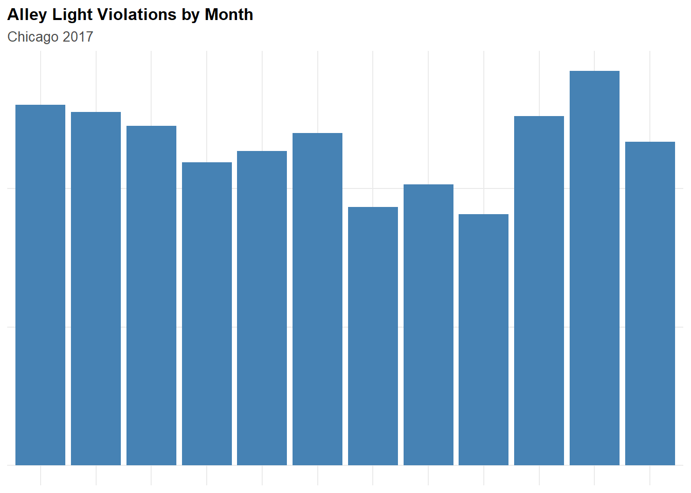
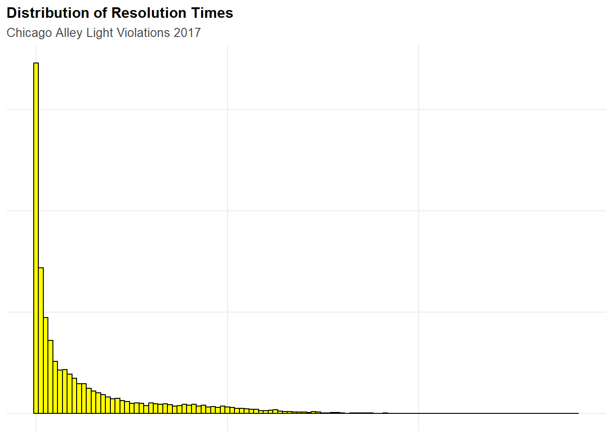
The left district map shows average resolution time by police district. The differences are substantial with some districts resolve complaints in under three weeks on average while others stretch past 60 days.
The right map shows the duplicate complaint rate: the share of 311 calls flagged as duplicates, meaning another resident already reported the same broken light. Districts with the highest duplicate rates, reaching 40–50% in some areas, are places where lights stay broken long enough for multiple residents to independently call it in. Together these two maps document something the aggregate count hides: the city’s response to broken alley lights is deeply unequal, and that inequality follows the same geography as Chicago’s broader patterns of disinvestment. The districts that wait longest for repairs and generate the most duplicate complaints are the same neighborhoods that will show up later in this analysis as burglary hot spots. That is not a coincidence, it is a structural condition that any model trained on this data will absorb and reproduce.
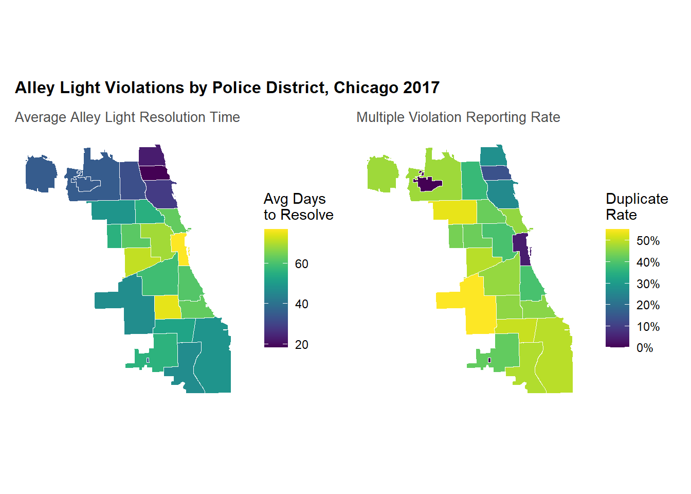
Rather than analyzing violations as individual points, we aggregate them into a regular grid of 500-meter by 500-meter cells covering the entire city. This fishnet approach converts Chicago into a set of consistently-sized units of analysis compatible with regression modeling. Instead of asking “how many lights are broken near this address,” we can ask “how many lights are broken in each cell” a format that allows us to attach predictors and outcomes to the same spatial unit and estimate a statistical relationship between them.
✓ Created fishnet grid - Number of cells: 2458 - Cell size: 500 x 500 meters - Cell area: 250000 square metersBroken Light distribution: Min. 1st Qu. Median Mean 3rd Qu. Max.
0.00 1.00 7.00 11.35 17.00 217.00 The fishnet map of broken alley light counts reveals a pattern that the dense dot map above obscured. Most of the city’s cells contain relatively few complaints—the map is predominantly dark purple—but a handful of cells, particularly in clusters on the West Side, register counts approaching or exceeding 200. These extreme cells are not randomly distributed; they sit in recognizable corridors of the city that correspond to areas with the longest resolution times and highest duplicate complaint rates we saw in the district maps. The fishnet makes this structure legible for modeling in a way the point map could not.
t also makes a quiet data quality problem visible. The North Side and lakefront cells are almost uniformly dark, near-zero complaint counts, while structurally similar streets in other parts of the city register far more. This could reflect genuinely better infrastructure maintenance. Or it could reflect lower reporting rates, faster city response that resolves complaints before they accumulate, or simply less trust in 311 as a useful channel.
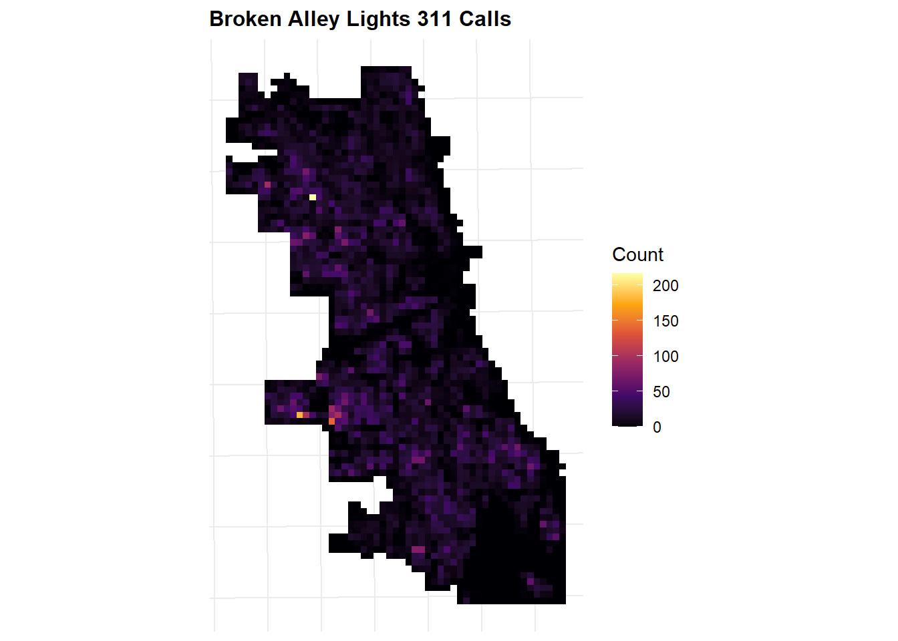
A single count of broken lights in each cell captures local conditions but misses the spatial context surrounding that cell. A grid cell with zero complaints is not necessarily a well-lit area, it may simply be a place where the reporting behavior or response times we documented above result in fewer recorded complaints. To capture proximity to known infrastructure failures regardless of what happens to be recorded in any individual cell, we calculate the mean distance from each cell’s centroid to its three nearest broken light complaints. A small value means the cell sits close to documented failures; a large value means it is relatively isolated from them. This feature allows the model to borrow spatial information from neighboring areas and is particularly important for smoothing over the reporting-behavior noise that makes the raw counts unreliable in some parts of the city.
✓ Calculated nearest neighbor distances Min. 1st Qu. Median Mean 3rd Qu. Max.
4.602 102.009 172.653 295.489 328.127 2313.532 Local Moran’s I is a measure of spatial autocorrelation. It asks whether a cell’s value is similar to or different from its neighbors in a way that is statistically unlikely to occur by chance. Applied here to the broken alley lights count, it classifies each cell into a cluster type.
The resulting map is interesting. Rather than a broad wash of hot spots across the South and West sides, the High-High cells, places where many broken lights are surrounded by more broken lights, appear as a series of tight, discrete clusters scattered along a north-south corridor through the middle of the city, with additional clusters on the West Side. The vast majority of the city, including most of the North Side and far South Side, is classified as not significant.
This spottiness is itself informative. It tells us that infrastructure neglect as captured by 311 data is not a smooth citywide gradient but a pattern of localized clusters, specific corridors and intersections where failures accumulate and persist. It also tells us that the relationship between broken lights and the underlying conditions we are trying to capture is more spatially concentrated than a simple choropleth of complaint counts would suggest. These hot spots will become a key predictive feature: whether a cell sits near one of these clusters of persistent failure is a meaningful signal about the environmental conditions in that area.
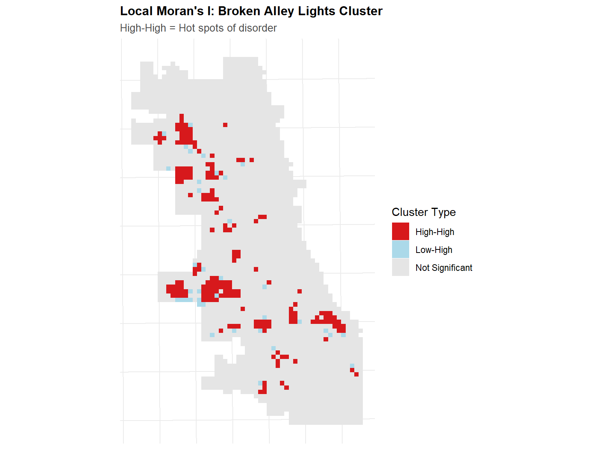
Using the High-High clusters identified above, we calculate the Euclidean distance from each grid cell to the nearest broken lights hot spot. This converts the cluster map into a continuous feature: cells within or immediately adjacent to a hot spot get near-zero values, while cells far from any significant cluster get large values. It is a concise summary of how embedded each cell is in a zone of systemic infrastructure neglect, and it is the spatial feature most likely to carry predictive power across the full fishnet even in cells that have few direct complaints of their own.
✓ Calculated distance to broken alley lights hot spots
- Number of hot spot cells: 193 With the infrastructure features in place, we can now load the outcome variable: 2017 burglary incidents recorded by the Chicago Police Department. These 7,482 reported burglaries are joined to the fishnet grid using a spatial join, so each cell receives a count of how many burglaries occurred within its boundaries.
✓ Loaded burglary data - Number of burglaries: 7482 - CRS: ESRI:102271 - Date range: 2017-01-01 to 2018-01-01 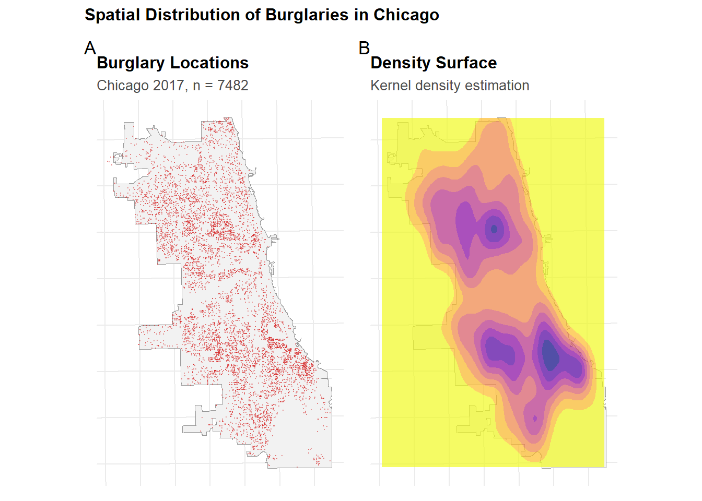
Map A shows the raw point locations of all 7,482 burglaries recorded in Chicago in 2017. The distribution is not uniform: the North Side and the lakefront corridor are noticeably sparse, while a dense band running through the West Side and portions of the South Side concentrates the bulk of incidents. The far south and northwest corners of the city are relatively quiet. What the dot map cannot easily convey, however, is the difference between a cluster of 10 incidents and a cluster of 40 — at this density, the eye can only register “many” or “few.”
Map B translates that point cloud into a continuous density surface using density estimation. The structure that was visually implied by the dots becomes much clearer here. There are three distinct high-density peaks: one on the upper West Side, and two on the South Side separated by a corridor of lower activity. These are not smoothed-out noise, they are real concentrations of reported burglary risk that the KDE bandwidth has revealed by borrowing signal from neighboring points. The yellow areas at the city’s edges and the North Side represent near-baseline risk by comparison.
Together, these two panels establish what the model is trying to predict and where the hardest prediction problem lies. The dense cores visible in Map B are precisely the areas where the model’s errors will be largest—where burglary risk is driven by deeply structural conditions that broken alley light data can only partially proxy.
Burglary count distribution: Min. 1st Qu. Median Mean 3rd Qu. Max.
0.000 0.000 2.000 3.042 5.000 40.000
Cells with zero burglaries: 781 / 2458 ( 31.8 %)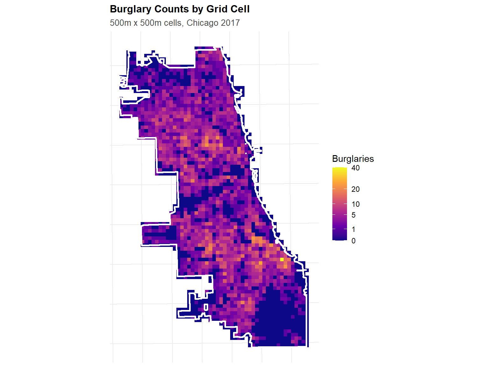
The resulting distribution is heavily right-skewed. The median cell contains just 2 burglaries, but the maximum reaches 40, and nearly a third of all cells— 31.8%—contain zero burglaries entirely. This zero-inflation is one of the core statistical challenges this model must address, and it is why a count regression approach is more appropriate than ordinary linear regression here. A normal distribution simply does not describe data shaped like this.
Before fitting a regression model, we establish a Kernel Density Estimation (KDE) baseline, a purely data-driven smoothing of the 2017 burglary points into a continuous risk surface. KDE doesn’t use any predictors; it simply asks where burglaries were concentrated and spreads that signal outward using a bandwidth-determined decay function.
✓ Calculated KDE baselineThe KDE map serves two purposes. First, it gives us a visual reference for the geographic structure of burglary risk that the regression model will need to approximate or improve upon. Second, it provides a formal performance benchmark: at the end of this analysis, we can ask whether a model that incorporates broken alley light features actually outperforms a method that uses only the spatial distribution of past crime.
The side-by-side comparison of the violation data and the KDE surface is instructive. The broken light clusters and the burglary density surface share substantial geographic overlap, particularly in the corridors through the West Side, but they are not identical. There are pockets of high burglary density with relatively few broken light complaints, and vice versa. The model will need to capture the shared signal while not being misled by the divergences.
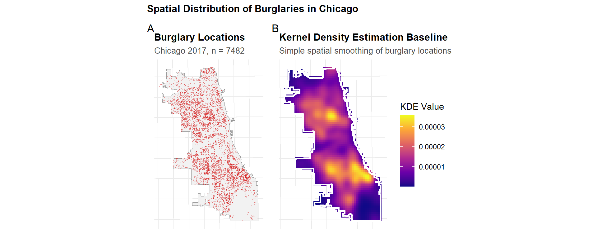
Placing the two fishnet maps side by side makes the central question of this analysis visual: do broken alley lights and burglaries cluster in the same places? The answer is largely yes, but with important nuance.
The left map shows broken alley light 311 complaints aggregated to the 500-meter fishnet. The brightest cells—reaching counts above 200—are concentrated in a corridor running through the West Side, with secondary clusters on the South Side. The North Side and lakefront are predominantly dark purple, near zero.
The right map shows 2017 burglary counts on the same grid. The scale is much smaller (maxing at 40 rather than 200), but the spatial pattern rhymes closely with the left. The West Side corridor lights up again, and the South Side clusters reappear in roughly the same locations. The North Side remains comparatively quiet.
But the maps are not identical, and the differences matter as much as the similarities. There are cells with high broken light counts but moderate burglary counts, and a few cells—particularly on the far South Side—where burglaries concentrate without a corresponding spike in light complaints. Areas with low complaint counts may have poor lighting and high crime that simply isn’t being reported through that channel. The model that follows attempts to extract signal from the shared geography while acknowledging that the two patterns are correlated proxies, not the same thing.
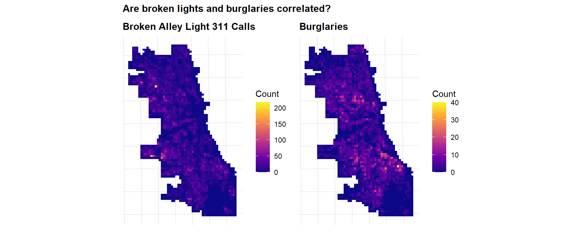
✓ Joined police districts - Districts: 22 - Cells: 1708 ✓ Prepared modeling data - Observations: 1708 - Variables: 6 We fit two count regression models to explain burglary counts per fishnet cell using three predictors: the raw count of broken alley light complaints in each cell (lights_out_2017), the mean distance to the three nearest light complaints (lights_out.nn), and the distance to the nearest spatial hot spot cluster (dist_to_hotspot).
Call:
glm(formula = countBurglaries ~ lights_out_2017 + lights_out.nn +
dist_to_hotspot, family = "poisson", data = fishnet_model)
Coefficients:
Estimate Std. Error z value Pr(>|z|)
(Intercept) 1.94834912 0.03567900 54.608 < 0.0000000000000002 ***
lights_out_2017 0.00272317 0.00078882 3.452 0.000556 ***
lights_out.nn -0.00338524 0.00014444 -23.437 < 0.0000000000000002 ***
dist_to_hotspot -0.00010389 0.00001058 -9.822 < 0.0000000000000002 ***
---
Signif. codes: 0 '***' 0.001 '**' 0.01 '*' 0.05 '.' 0.1 ' ' 1
(Dispersion parameter for poisson family taken to be 1)
Null deviance: 6710.3 on 1707 degrees of freedom
Residual deviance: 4963.8 on 1704 degrees of freedom
AIC: 9032.2
Number of Fisher Scoring iterations: 6The first model is a Poisson regression, which is the standard starting point for count data. All three predictors are highly significant. More broken lights in a cell is positively associated with burglary counts; greater distance from complaints and hot spots is negatively associated, as expected.
However, the dispersion test reveals a dispersion parameter of 3.25, well above the rule-of-thumb threshold of 1.5, indicating that the Poisson model’s assumption of equal mean and variance is violated. The data is overdispersed, meaning there is more variability in the burglary counts than Poisson can accommodate.
Dispersion parameter: 3.25 Rule of thumb: >1.5 suggests overdispersion⚠ Overdispersion detected! Consider Negative Binomial model.The Negative Binomial model addresses this by estimating a separate dispersion parameter (θ = 1.655). The improvement in fit is substantial: AIC drops from 9,032 (Poisson) to 7,557 (Negative Binomial), and the residual deviance falls from 4,964 to 1,861. The coefficient signs and significance patterns are consistent across both models, which gives confidence that the relationships are real and not artifacts of distributional misspecification. We proceed with the Negative Binomial model for all subsequent steps.
Call:
glm.nb(formula = countBurglaries ~ lights_out_2017 + lights_out.nn +
dist_to_hotspot, data = fishnet_model, init.theta = 1.654963477,
link = log)
Coefficients:
Estimate Std. Error z value Pr(>|z|)
(Intercept) 1.95361263 0.06651523 29.371 < 0.0000000000000002 ***
lights_out_2017 0.00352497 0.00169544 2.079 0.0376 *
lights_out.nn -0.00361395 0.00021646 -16.696 < 0.0000000000000002 ***
dist_to_hotspot -0.00009261 0.00001807 -5.125 0.000000298 ***
---
Signif. codes: 0 '***' 0.001 '**' 0.01 '*' 0.05 '.' 0.1 ' ' 1
(Dispersion parameter for Negative Binomial(1.655) family taken to be 1)
Null deviance: 2576.7 on 1707 degrees of freedom
Residual deviance: 1861.1 on 1704 degrees of freedom
AIC: 7556.5
Number of Fisher Scoring iterations: 1
Theta: 1.6550
Std. Err.: 0.0949
2 x log-likelihood: -7546.4900
Model Comparison:Poisson AIC: 9032.2 Negative Binomial AIC: 7556.5 Standard cross-validation randomly splits observations into training and test sets, which tends to be optimistic for spatial data because nearby cells share unmeasured characteristics. A model trained on cells adjacent to the test area has already “seen” the spatial context it is being asked to predict. Leave-One-Group-Out (LOGO) cross-validation corrects for this by holding out an entire geographic unit, here, a police district, at a time, training on the remaining 21 districts, and predicting the held-out one.
Across 22 folds, the model achieves a mean MAE of 2.57 burglaries per cell and a mean RMSE of 3.49. Performance varies considerably by district. District 3, produces the highest MAE at 5.87, the model struggles most where burglary counts are high and spatially concentrated in ways the alley light features don’t fully capture. Districts 17 and 20 on the Northwest Side produce the lowest errors, around 1.78–1.80, in areas where burglary rates are more moderate and the signal from broken light infrastructure is more spatially consistent.
This geographic variation in error is itself informative. The places the model predicts worst are places where either the broken light data is least reliable as a proxy for conditions, or where the structural drivers of burglary are not well-captured by infrastructure neglect alone.
Running LOGO Cross-Validation... Fold 1 / 22 - District 5 - MAE: 1.95
Fold 2 / 22 - District 4 - MAE: 1.84
Fold 3 / 22 - District 22 - MAE: 2.4
Fold 4 / 22 - District 6 - MAE: 3.08
Fold 5 / 22 - District 8 - MAE: 3.24
Fold 6 / 22 - District 7 - MAE: 2.96
Fold 7 / 22 - District 3 - MAE: 5.87
Fold 8 / 22 - District 2 - MAE: 2.8
Fold 9 / 22 - District 9 - MAE: 2.03
Fold 10 / 22 - District 10 - MAE: 2.33
Fold 11 / 22 - District 1 - MAE: 2.34
Fold 12 / 22 - District 12 - MAE: 3.29
Fold 13 / 22 - District 15 - MAE: 1.88
Fold 14 / 22 - District 11 - MAE: 2.87
Fold 15 / 22 - District 18 - MAE: 2.39
Fold 16 / 22 - District 25 - MAE: 2.5
Fold 17 / 22 - District 14 - MAE: 2.75
Fold 18 / 22 - District 19 - MAE: 2.07
Fold 19 / 22 - District 16 - MAE: 2.38
Fold 20 / 22 - District 17 - MAE: 1.78
Fold 21 / 22 - District 20 - MAE: 1.8
Fold 22 / 22 - District 24 - MAE: 2.02
✓ Cross-Validation CompleteMean MAE: 2.57 Mean RMSE: 3.49 | fold | test_district | n_test | mae | rmse |
|---|---|---|---|---|
| 7 | 3 | 43 | 5.87 | 7.64 |
| 12 | 12 | 73 | 3.29 | 4.74 |
| 5 | 8 | 197 | 3.24 | 4.20 |
| 4 | 6 | 63 | 3.08 | 4.52 |
| 6 | 7 | 52 | 2.96 | 3.85 |
| 14 | 11 | 43 | 2.87 | 3.51 |
| 8 | 2 | 56 | 2.80 | 3.53 |
| 17 | 14 | 46 | 2.75 | 4.17 |
| 16 | 25 | 85 | 2.50 | 3.45 |
| 3 | 22 | 112 | 2.40 | 2.89 |
| 15 | 18 | 30 | 2.39 | 4.02 |
| 19 | 16 | 129 | 2.38 | 2.82 |
| 11 | 1 | 28 | 2.34 | 3.20 |
| 10 | 10 | 63 | 2.33 | 3.18 |
| 18 | 19 | 63 | 2.07 | 2.65 |
| 9 | 9 | 107 | 2.03 | 2.53 |
| 22 | 24 | 41 | 2.02 | 2.97 |
| 1 | 5 | 98 | 1.95 | 2.75 |
| 13 | 15 | 32 | 1.88 | 2.40 |
| 2 | 4 | 235 | 1.84 | 3.48 |
| 21 | 20 | 30 | 1.80 | 2.16 |
| 20 | 17 | 82 | 1.78 | 2.17 |
Comparing the regression model to the KDE baseline reveals a mixed picture. The KDE baseline achieves a lower MAE (2.06 vs. 2.43) and lower RMSE (2.95 vs. 3.49). By these headline accuracy metrics, the simpler method performs better on 2017 data.
This is not surprising and is worth interpreting carefully rather than treating as a failure of the regression approach. KDE is essentially a sophisticated spatial smoother that encodes where past crime occurred — it is almost guaranteed to fit historical patterns well. The regression model, by contrast, is attempting something harder: it is trying to explain burglary counts from upstream infrastructure conditions rather than simply recapitulating the crime distribution itself. A model that uses broken light features to predict burglaries is more interpretable, more actionable for policy purposes, and potentially more generalizable to new years or new geographies than a KDE surface built from historical crime alone.
The side-by-side map of predicted versus actual counts helps locate where the discrepancies are largest. The model tends to underpredict in the highest-burglary cells — a common pattern with count models when extreme values are rare and the right tail is difficult to capture — and to overpredict in some low-burglary areas with high broken light counts, reinforcing the earlier observation that broken lights and burglaries are correlated but not co-located everywhere.

| approach | mae | rmse |
|---|---|---|
| model | 2.43 | 3.49 |
| kde | 2.06 | 2.95 |
The error maps make the spatial structure of model performance explicit. The model’s largest positive residuals, cells where actual burglaries far exceeded predictions, cluster on the West Side and in parts of the South Side, particularly in District 3. These are areas where burglary risk appears to be driven by factors beyond what broken alley light data can capture: concentrated poverty, housing vacancy, and patterns of police under-reporting that the 311 signal does not reflect.
The largest negative residuals, cells where the model predicted more burglaries than occurred, are scattered more evenly across the city, including some higher-income North Side neighborhoods with few broken lights and few burglaries but where the model’s proximity features still generate modest positive predictions.
The exponentiated coefficient table provides a final summary of the model’s learned relationships. Each additional broken light complaint in a cell is associated with a 0.4% increase in the expected burglary count (rate ratio = 1.004). Each additional meter of distance from the nearest complaint reduces expected burglaries by 0.4% (rate ratio = 0.996). Distance to hot spots shows a similarly small but statistically significant negative relationship. These effect sizes are modest, consistent with the idea that broken alley lights are one of many overlapping signals in a complex spatial system rather than a primary driver of burglary risk.
Taken together, the error analysis reinforces the broader critique in the introduction. The places this model gets wrong most severely are the same places where the underlying data, policing records generated by an institution under federal scrutiny for unconstitutional practices, is least likely to be an accurate representation of where crime actually occurs. Modeling error in this context is not just a technical problem; it is a trace of the structural inequities baked into the data from the start.
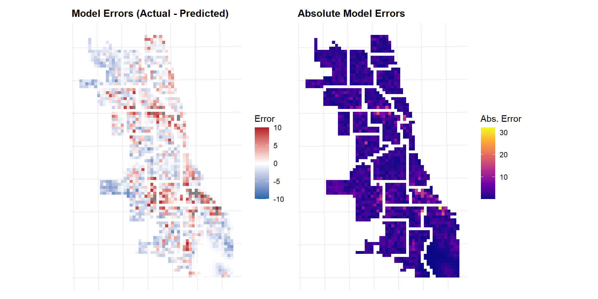
| Variable | Rate Ratio | Std. Error | Z | P-Value |
|---|---|---|---|---|
| (Intercept) | 7.054 | 0.067 | 29.371 | 0.000 |
| lights_out_2017 | 1.004 | 0.002 | 2.079 | 0.038 |
| lights_out.nn | 0.996 | 0.000 | -16.696 | 0.000 |
| dist_to_hotspot | 1.000 | 0.000 | -5.125 | 0.000 |
| Note: | ||||
| Rate ratios > 1 indicate positive association with burglary counts. |
*(Claude Sonnet 4.6 was used to debug code)